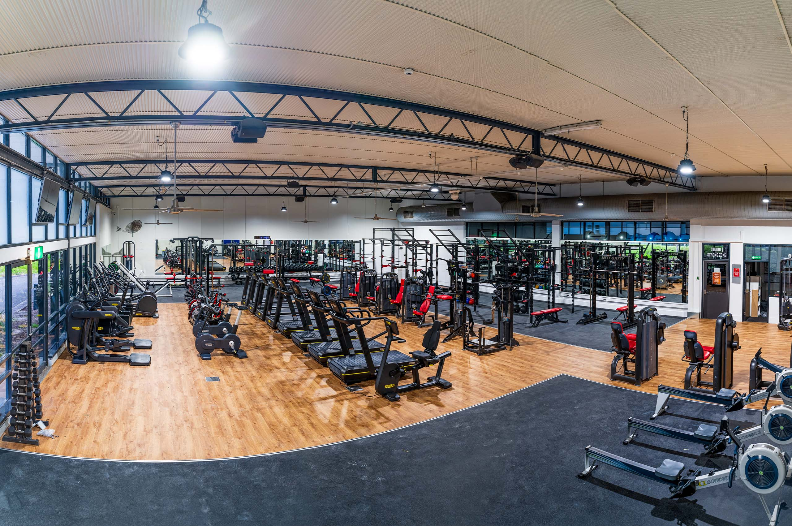
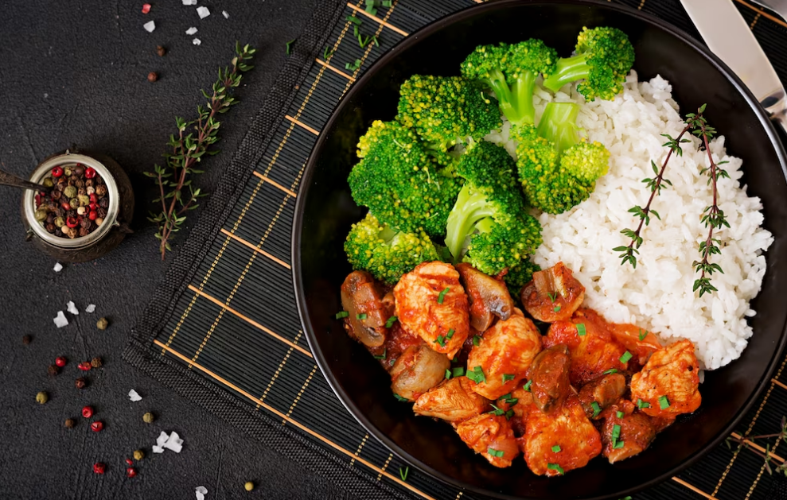

Recently, I have become interested in going to the gym. I usually go to the La Trobe Sports Centre three times a week. I train different muscle groups on different days, such as chest and triceps, back and biceps, and shoulders and legs. I started going to the gym because after coming to Australia, I noticed that many people have bigger and stronger bodies. In Japan, I did not really worry about being skinny, but in Australia, it made me want to improve myself. Going to the gym helps me build muscle, stay healthy, and feel more confident.

For my gym diet, I try to be careful with what I eat because food is just as important as training when it comes to building muscle. I make sure to eat enough protein, carbohydrates, and other nutrients every day so my body has the energy to train and recover properly. My goal is to gain 10 kilograms in one year, so I try to eat a lot of carbohydrates such as rice, pasta, bread, and potatoes to increase my calories. I also try to take around two grams of protein per kilogram of my body weight every day, because protein helps my muscles grow and repair after workouts. By eating properly and training consistently, I hope to build a bigger and stronger body.